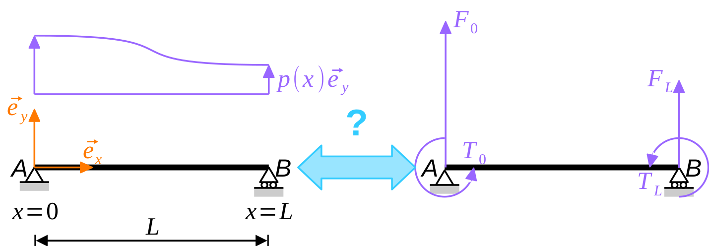
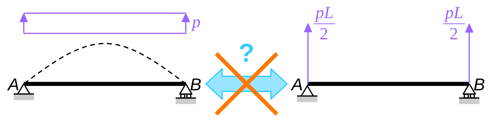
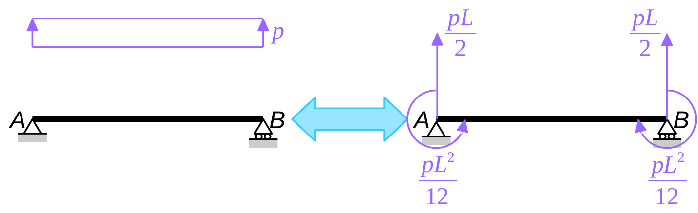

The previous instalment of this series closed with the assertion that Hermite elements deliver exact nodal displacements, provided that the potential of external forces is evaluated consistently. Before we turn to the actual proof of this statement, we will discuss in the present post what “consistent evaluation of the potential of external forces” actually means.
The problem of sharing loads between nodes
Finite element models arguably know only of nodal forces and moments: distributed loads applied to the real structure must be replaced by concentrated forces and moments applied to the nodes of the finite element model.

The process is illustrated in Fig. 1 with a horizontal beam \(\mathsf{AB}\), subjected to a distributed, transverse load \(p(x) \, \vec{e}_y\) ; the length of the beam is \(L\). There are only two nodes in the corresponding finite element model: \(\mathsf{A}\) (\(x = 0\) and \(y = 0\)) and \(\mathsf{B}\) (\(x = L\) and \(y = 0\)).
The nodal loads are: nodal forces \(\vec{F}_0\) and \(\vec{F}_L\), as well as torques \(T_0 \, \vec{e}_z\) and \(T_L \, \vec{e}_z\). Intuitively, we will discard the longitudinal components of the nodal forces and assume that \(\vec{F}_0 = F_0 \, \vec{e}_y\) and \(\vec{F}_L = F_L \, \vec{e}_y\).
These end forces and moments must be equivalent (in a sense to be defined) to the real distributed load. Of course, we will require the two systems of loads to be at least statically equivalent, meaning that both the resultant forces and resultant moments are equal. However, this delivers only two equations for four unknowns \[ F_0 + F_L = \int_0^L p(x) \, \mathrm{d} x, \tag{1}\] \[ F_L \, L + T_0 + T_ L = \int_0^L x \, p(x) \, \mathrm{d} x, \tag{2}\] which is not enough to define equivalent nodal forces unequivoquely. How to get to the two missing equations is discussed in the remainder of this post.
When common sense fails
In the example depicted in Fig. 1, common sense would probably suggest to assume that the end torques are null, \(T_0 = 0\) and \(T_L = 0\), which, upon combination with Eqs. (1) and (2), delivers \[ F_0 = \frac{1}{L} \, \int_0^L \bigl( L - x \bigr) \, p(x) \, \mathrm{d} x \quad \text{and} \quad F_L = \frac{1}{L} \, \int_0^L x \, p(x) \, \mathrm{d} x \] and the nodal forces are defined unambiguously.
For the common case of a uniformly distributed load (UDL), we get \(F_0 = F_L = p \, L / 2\): the load is shared equally between the two nodes.
Unfortunately, common sense fails in that case. Remember that I claimed in the previous instalment that Hermite elements can predict the nodal displacements, provided that the loads are shared appropriaterly between nodes. Clearly, the present load-sharing method is not appropriate as examplified in Fig. 2. In this example, the beam is simply supported at both ends and the only loads are applied to supported nodes: they create no displacements of the beam. In particular, the nodal rotations will not be correct!

It’s all about work
So, ignoring the nodal torques was not such a good idea in the end. In fact, if we want the previous simply supported beam example to work, we need to apply end torques to the finite element model. To quantify these end torques, static equivalence (as defined in the previous section) was not sufficient. In the present section, we will define equivalence in terms of mechanical work.
We first observe that mechanical work can be used to characterize strict equality between two systems of loads. Indeed \[ \begin{multline} p_1(x) = p_2(x) \quad \text{for all} \quad 0 \leq x \leq L\\ \iff \quad \int_0^L p_1(x) \, \hat{v}(x) \, \mathrm{d} x = \int_0^L p_2(x) \, \hat{v}(x) \, \mathrm{d} x \quad \text{for all} \quad \hat{v}:[0, L] \longrightarrow \mathbb{R}. \end{multline} \]
In other words, two systems of loads are equal if they produce the same mechanical work for all possible displacements of the structure. In finite element analysis, the structure is only tested agains some possible displacements (the so-called test functions). This suggests that two systems of loads should be considered as equivalent, FE-wise, if they produce the same work for all test functions. \[ p_1 \equiv p_2 \iff \quad \int_0^L p_1(x) \, \hat{v}(x) \, \mathrm{d} x = \int_0^L p_2(x) \, \hat{v}(x) \, \mathrm{d} x \quad \text{for all test functions } \hat{v}. \]
Let us go back to the initial problem. The two systems of loads under consideration are : the distributed load \(p(x)\) on the one hand, and the end forces \(F_0\) and \(F_L\) and end torques \(T_0\) and \(T_L\) on the over hand. The above equivalence condition therefore reads \[ \int_0^L p(x) \, \hat{v}(x) \, \mathrm{d} x = F_0 \, \hat{v}(0) + T_0 \, \hat{v}'(0) + F_L \, \hat{v}(L) + T_L \, \hat{v}'(L) \quad \text{for all test functions } \hat{v}. \]
In the case of beam elements, the test functions are Hermite polynomials (which is nothing but a clever decomposition of cubic polynomials). It is therefore sufficient to write the above condition for the following virtual displacements: \(\hat{v}(x) = 1, x, x^2\) and \(x^3\), which delivers… four equations as expected! For \(\hat{v}(x) = 1\) and \(\hat{v}(x) = x\), we find the following equations \[ \int_0^L p(x) \, \mathrm{d} x = F_0 + F_L, \tag{3}\] \[ \int_0^L x \, p(x) \, \mathrm{d} x = L \, F_L + T_0 + T_L, \tag{4}\] which express that work equivalence implies static equivalence [see Eqs. (1) and (2)]. Finally, we get for \(\hat{v}(x) = x^2, x^3\) \[ \int_0^L x^2 \, p(x) \, \mathrm{d} x = L^2 \, F_L + 2L \, T_L, \tag{5}\] \[ \int_0^L x^3 \, p(x) \, \mathrm{d} x = L^3 \, F_L + 3L^2 \, T_L. \tag{6}\]
Eqs. (3), (4), (5) and (6) are readily solved \[ F_0 = \int_0^L \biggl( 1 - 3 \frac{x^2}{L^2} + 2 \frac{x^3}{L^3} \biggr) \, p(x) \, \mathrm{d} x, \qquad F_L = \int_0^L \biggl( 3 \frac{x^2}{L^2} - 2 \frac{x^3}{L^3} \biggr) \, p(x) \, \mathrm{d} x, \tag{7}\] \[ \frac{T_0}{L} = \int_0^L \biggl( \frac{x^3}{L^3} - 2 \frac{x^2}{L^2} + \frac{x}{L} \biggl) \, p(x) \, \mathrm{d} x, \qquad \frac{T_L}{L} = \int_0^L \biggl( \frac{x^3}{L^3} - \frac{x^2}{L^2} \biggl) \, p(x) \, \mathrm{d} x. \tag{8}\]
There we are! In a (Hermite) finite element model, the potential of external forces is evaluated consistently if the equivalent nodal loads are defined according to the above relations.
Exercise 1 Explain why the polynomials that appear in Eqs. (7) and (8) under the “integral” symbol are in fact the Hermite polynomials introduced in the previous instalment.
The case of a simply supported beam subjected to a UDL
For a uniformly distributed load (\(p = \text{const.}\)), we find (see also Fig. 3) \[ F_0 = F_L = \frac{p \, L}{2} \quad \text{and} \quad T_0 = -T_L = \frac{p \, L^2}{12}. \]

As argued previously, the end forces \(F_0\) and \(F_L\) produce no displacement in a simply supported beam. But the end torques \(T_0\) and \(T_L\) do!
More precisely, the true, uniformly distributed load produces the following end-rotations and mid-span deflection \[ θ(0) = -θ(L) = \frac{p \, L^3}{24EI} \quad \text{and} \quad v(L/2) = \frac{5p \, L^4}{384EI} ≈ 0.0130\frac{p \, L^4}{EI}, \] while the equivalent nodal forces lead to \[ θ(0) = -θ(L) = \frac{p \, L^3}{24EI} \quad \text{and} \quad v(L/2) = \frac{p \, L^4}{96EI} ≈ 0.0104\frac{p \, L^4}{EI}. \]
Exercise 2 Show the above results (hint: use the theorem of Müller and Breslau).
Again, it is observed that the nodal displacements (at \(x = 0\) and \(x = L\)) are correct: Hermite elements are exact! Note that displacements between nodes (e.g., at mid-span, \(x = L / 2\)) are not correct.
Conclusion
In the present instalment of this series, we have introduced a consistent method to replace any system of loads with an equivalent system of nodal forces and torques.
In the particular case of a simply supported beam, we have again observed that these equivalent nodal loads produce the exact nodal displacements (note that displacements between nodes are not necessarily exact).
In the next instalment of this series, we will actually prove this property.